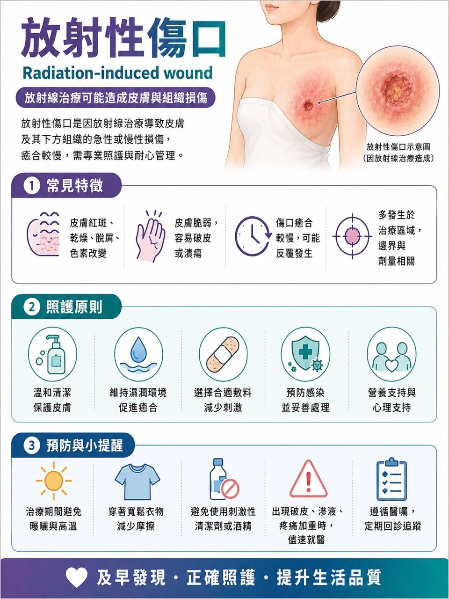
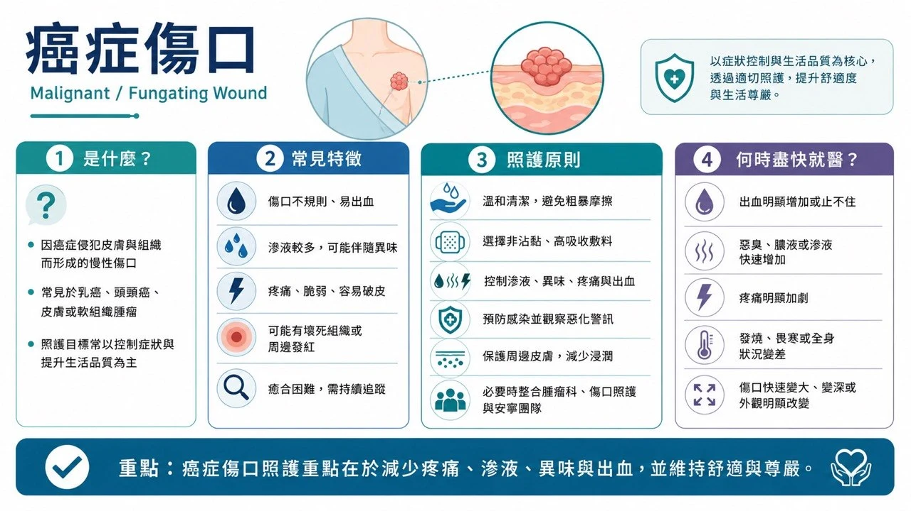

常見慢性傷口（一般民眾版）
一、糖尿病足傷口


常見位置：腳趾尖、趾縫；足底受力處（前腳掌、腳跟）；拇趾外側、骨頭突出處；鞋子摩擦壓迫處；雞眼、厚繭或水泡下方。
可能原因：糖尿病神經病變使痛覺與壓力感減退；鞋子不合、反覆摩擦或足底壓力過高；足部變形、厚繭或步態異常；周邊動脈循環不良；小傷口、香港腳、嵌甲或自行剪雞眼後感染；血糖控制不佳。
可觀察的外觀與症狀：水泡、裂傷、潰瘍、滲液或黑色組織；周圍紅腫熱或異味；腳麻、刺痛或感覺遲鈍；足部冰冷、蒼白或暗紫；傷口可能很深但不一定會痛；突然腫脹、變形或局部溫度明顯升高。
高風險族群：曾有糖尿病足潰瘍或截肢者；神經病變、足部變形或厚繭者；腎臟病、洗腎或周邊動脈疾病者；視力不良、行動不便無法自行檢查足部者；血糖長期控制不佳或吸菸者。
日常照護：每天檢查腳底、腳趾與趾縫（可用鏡子或請家人協助）；穿合腳包覆性好的鞋襪、穿鞋前檢查鞋內異物；不赤腳行走、不自行剪雞眼厚繭、不用腐蝕性藥水；依指示換藥及減壓，不要因「不痛」而繼續踩踏傷口；控制血糖、戒菸、按時回診。
不適合自行處理：任何新發現的糖尿病足潰瘍；紅腫快速擴大、化膿、惡臭、發燒畏寒；傷口變黑、腳趾變紫或足部突然冰冷；深可見肌腱或骨頭；足部突然腫熱變形（即使沒有明顯傷口）；精神變差、呼吸急促或血糖明顯失控。
應看哪一科：優先尋求糖尿病足整合門診、傷口照護中心、新陳代謝科或內分泌科；疑循環不良由心臟血管外科／血管外科評估；深部感染、壞死或骨髓炎疑慮需感染科、骨科或整形外科共同處理。（IWGDF 2023 糖尿病足指引）
二、壓傷／壓瘡


常見位置：尾骶骨、臀部坐骨處；腳跟腳踝；髖部大轉子；手肘、肩胛、脊椎突出處；後腦、耳朵；鼻導管、氧氣面罩、石膏或固定器壓迫處。
可能原因：同一位置長時間受壓；身體下滑產生剪力；皮膚與床單衣物反覆摩擦；尿便汗使皮膚長期潮濕；營養不良、脫水或循環不佳。
可觀察的外觀與症狀：淺色皮膚出現持續不退的紅；深色皮膚呈暗紫藍色或顏色加深；局部疼痛發熱變硬腫脹或觸感像海綿；水泡、破皮或淺層潰瘍；嚴重時深入脂肪肌肉肌腱甚至骨骼；可有滲液、壞死、異味或感染。
高風險族群：長期臥床、坐輪椅或無法自行翻身者；中風、脊髓損傷、失智或意識不清者；感覺障礙、重病或術後患者；尿便失禁者；高齡、消瘦、肥胖、營養不良或曾有壓傷者。
日常照護：依照護計畫定時變換姿勢、避免直接壓在受傷部位；使用專業評估的減壓床墊坐墊或腳跟懸空設備；每天檢查骨突處與器材接觸處；保持皮膚清潔乾燥、妥善處理失禁；注意蛋白質熱量與水分（必要時營養師評估）；移動時減少拖拉摩擦。
不適合自行處理：持續不退的紅、暗紫或黑色區域；已形成水泡破皮或潰瘍；快速變深、黑色組織、膿液或臭味；周圍紅腫擴大、發燒畏寒或精神變差；可見脂肪肌腱或骨頭；不知如何安全翻身或選減壓設備。
應看哪一科：傷口照護中心、整形外科、一般外科、復健科、家庭醫學科、居家護理或長照傷口護理。深部壞死或疑骨髓炎需外科清創與感染科評估。壓傷早期可能只有顏色或觸感改變，但深部組織已受損。（NHS 壓傷衛教）
三、動脈循環不良傷口


常見位置：腳趾尖、趾縫；腳跟；足部外側；腳踝外側；鞋子摩擦或輕微外傷處。
可能原因：周邊動脈疾病與動脈粥樣硬化；血管狹窄阻塞造成缺血；糖尿病、吸菸、高血壓或高血脂；血栓或其他血管疾病。
可觀察的外觀與症狀：邊界較清楚、像被挖出的小洞；底部蒼白乾燥發黑或壞死；滲液不多但可能非常疼痛；抬腳時痛或蒼白加重、垂下稍緩解；足部冰冷麻木、皮膚發亮毛髮減少；走路小腿痛休息改善；脈搏減弱或摸不到。
高風險族群：吸菸者；糖尿病、高血壓、高血脂；心血管疾病、中風或腎臟病；高齡；曾接受下肢血管手術或周邊動脈疾病者。
日常照護：保護足部避免碰撞燙傷與赤腳行走；適度保暖但不直接用熱水袋電毯；控制三高並戒菸；不要自行使用彈性繃帶或高壓力襪；應接受血流檢查（踝肱血壓比、血管超音波）。
不適合自行處理：休息仍劇烈腳痛或夜間痛醒；腳趾足部突然冰冷蒼白發紫麻木；發黑壞疽惡臭或快速惡化；突然失去感覺或活動能力；持續不癒合；未經血流評估不宜自行加壓包紮。
應看哪一科：心臟血管外科、血管外科或具血管檢查能力的傷口照護中心。突然冰冷、劇痛、蒼白、麻木或活動障礙可能是急性肢體缺血，應立即急診。血流未恢復前單靠敷料很難癒合。（NHS 周邊動脈疾病）
四、靜脈循環不良傷口


常見位置：小腿下段；腳踝上方（尤其內側）；通常不以腳趾尖或足底為主。
可能原因：靜脈瓣膜功能不全；靜脈曲張；曾深部靜脈栓塞；長期站坐或小腿肌肉幫浦不足；靜脈壓長期升高損傷皮膚組織。
可觀察的外觀與症狀：較淺、形狀不規則；滲液較多；小腿腳踝腫脹沉重痠痛；周圍皮膚褐色暗沉變硬；乾燥脫屑發癢或靜脈性濕疹；可伴靜脈曲張；抬腿後不適減輕。
高風險族群：靜脈曲張或曾靜脈潰瘍者；曾深部靜脈栓塞者；長期站坐或活動量不足者；肥胖、高齡或下肢手術後；小腿長期水腫者。
日常照護：先接受血流評估，再由專業人員決定是否壓迫治療；依指示抬腿、步行、活動腳踝；避免久坐久站；保護周圍皮膚避免抓傷；按時換藥處理滲液；癒後依醫囑穿醫療壓力襪防復發。
不適合自行處理：未檢查動脈血流前自行緊繃包紮；腳冰冷蒼白劇痛或脈搏微弱；紅腫熱痛快速擴大、發燒或惡臭膿液；單側小腿突然明顯腫痛（需排除深部靜脈栓塞）；快速變大變黑或大量出血。
應看哪一科：傷口照護中心、心臟血管外科、血管外科或一般外科。壓迫治療是靜脈性傷口的重要治療，但必須先確認動脈血流足夠。（NHS 靜脈性腿部潰瘍）
五、長期水腫相關傷口
常見位置：小腿、腳踝與足背；淋巴水腫的手臂或腿；皮膚皺褶或反覆滲液處；曾淋巴結手術或放射治療的肢體。
可能原因：慢性靜脈功能不全；淋巴系統先天異常或後天受損；癌症手術、淋巴結切除或放射治療；心腎肝疾病；缺乏活動、肥胖或反覆感染。
可觀察的外觀與症狀：肢體腫脹沉重緊繃；初期按壓留凹痕；後期皮膚變厚硬粗糙或皺褶；皮膚裂開、水泡或持續滲透明液；衣鞋戒錶變緊；易反覆蜂窩性組織炎。
高風險族群：癌症手術、淋巴結切除或放療者；慢性靜脈疾病；心腎肝功能不良；肥胖、活動不足或長期臥床；曾反覆蜂窩性組織炎者。
日常照護：保持皮膚清潔並保濕防乾裂；避免割傷蟲咬燙傷抓癢；依專業指示運動、抬高或使用壓迫用品；處理香港腳、趾縫潮濕及小傷口；每天觀察腫脹、溫度、顏色與滲液；應先查明水腫原因，不能只靠利尿劑或自行包紮。
不適合自行處理：單側肢體突然腫痛或變色；皮膚突然紅熱痛合併發燒畏寒；水腫伴呼吸困難、胸痛或尿量減少（急症）；大量滲液異味化膿或快速擴大；未確認動脈循環及水腫原因前自行強力加壓。
應看哪一科：先由家庭醫學科或內科查水腫原因，再轉介心臟內科、腎臟科、肝膽腸胃科、血管外科、復健科、淋巴水腫治療團隊或傷口照護中心。（NHS 淋巴水腫）
六、放射治療後傷口


常見位置：曾放療的皮膚範圍；乳房、胸壁、頭頸、骨盆或四肢；皮膚皺褶處；手術疤痕與放療範圍重疊處。
可能原因：放射線損傷皮膚微血管及深部組織；治療中的急性皮膚反應；數月數年後的纖維化、缺血或壞死；手術、摩擦、感染誘發破皮；腫瘤復發也可能表現為不癒合傷口，需要鑑別。
可觀察的外觀與症狀：皮膚紅或變深、乾燥脫屑疼痛；濕潤破皮滲液或潰瘍；長期變薄變硬失去彈性；微血管擴張、色素變化；反覆裂開、感染或癒合緩慢。
高風險族群：高劑量或重複放療者；同時化療、標靶或免疫治療者；糖尿病、抽菸、營養不良或循環不佳者；放療部位有皺褶摩擦或手術傷口者；曾嚴重放射性皮膚炎者。
日常照護：保持清潔、避免摩擦抓傷日曬；穿寬鬆柔軟衣物；放療期間用任何藥膏敷料前先詢問放療團隊；不用刺激性消毒劑或成分不明產品；記錄傷口變化；注意放療數月數年後才出現的皮膚改變。
不適合自行處理：大面積濕性脫皮、劇痛或大量滲液；潰爛出血化膿異味；放療結束仍持續惡化；原治療區數月數年後出現新腫塊或新傷口；深達肌肉骨骼；發燒畏寒全身不適。
應看哪一科：先聯絡原放射腫瘤科或癌症團隊，必要時會診整形外科、皮膚科、傷口照護中心、腫瘤內科或外科；疑復發需影像或切片。（NCI 放射治療副作用）
七、癌症相關傷口


常見位置：乳房或胸壁；頭頸部；皮膚癌原發部位；腫瘤接近皮膚或轉移處；術後復發疤痕附近。
可能原因：腫瘤生長突破皮膚；壓迫破壞微血管使組織缺血壞死；復發或皮膚轉移；治療造成免疫下降、感染或癒合不良。
可觀察的外觀與症狀：不規則腫塊、潰瘍或蕈狀突出；易滲血或輕碰出血；大量滲液、壞死及異味；疼痛搔癢或周圍浸潤；逐漸增大可伴感染；外觀變化可能造成心理與社交壓力。
高風險族群：皮膚癌、乳癌、頭頸癌；腫瘤近皮膚；局部晚期或轉移性癌症；疤痕附近復發；免疫下降、營養不良或多重治療者。
日常照護：換藥輕柔、避免摩擦撕扯；用不易黏傷口的敷料，依專業建議處理滲液異味；換藥前備好止血用品；記錄出血滲液氣味疼痛與大小；疼痛異味出血都可尋求症狀控制，不必因害羞而隱瞞；照護目標可能是控制症狀與生活品質，不一定以完全癒合為唯一目標。
不適合自行處理：反覆或大量出血；噴射狀出血或加壓無法止血（立即呼叫急救）；快速增大壞死或疼痛明顯增加；大量滲液惡臭化膿或發燒；新腫塊潰瘍或疤痕破裂；不可自行剪除突出組織或強力刷洗。
應看哪一科：原癌症治療團隊（腫瘤內科、外科、放射腫瘤科）；另可尋求傷口照護中心、整形外科、皮膚科及緩和醫療團隊。（Macmillan 癌症潰瘍傷口）
八、長期沒有癒合的傷口
常見位置：任何部位皆可能；常見於小腿腳踝足部腳趾、骨突或長期受壓處、手術切口或外傷部位、曾放療區域、反覆發炎滲液處。
可能原因：糖尿病、感染或異物殘留；動靜脈循環不良；長期受壓摩擦或水腫；持續承重未減壓；營養不良、貧血、腎病或免疫異常；類固醇或免疫抑制藥物；發炎性疾病、血管炎或特殊皮膚病；癌症、放射傷害等。
可觀察的外觀與症狀：數週沒縮小或反而擴大；反覆結痂又破裂；持續滲液出血疼痛異味；底部黃色黑色或異常增生組織；周圍紅腫變硬變色；疼痛與外觀不成比例；邊緣隆起、易出血或外觀異常。
高風險族群：糖尿病、血管疾病或長期水腫；長期臥床行動不便；高齡、營養不良、吸菸；腎病洗腎或免疫低下；癌症或曾放療；長期類固醇或免疫抑制藥物。
日常照護：固定角度、距離與光線拍照記錄；依專業指示清潔換藥、保護周圍皮膚；避免頻繁換藥膏或混用偏方；足夠營養蛋白質水分；控制血糖、戒菸、避免受壓；需要評估「為何不癒合」，而不只是更換敷料。
不適合自行處理：適當照護仍未改善或持續擴大；反覆出血、邊緣隆起、組織異常增生；疼痛突增、紅腫擴散、化膿惡臭或發燒；變黑、可見肌腱骨骼；腳冰冷發紫麻木或活動障礙；外觀特殊或原因不明（可能需培養、影像或切片）。
應看哪一科：先到傷口照護中心、整形外科、一般外科、皮膚科或家庭醫學科整體評估，再依原因轉介——血流問題：心臟血管外科／血管外科；糖尿病足：新陳代謝科與糖足團隊；感染：感染科；壓傷與活動問題：復健科、居家護理或長照；疑癌症或放射傷害：腫瘤科、放射腫瘤科或相關外科；特殊發炎性皮膚傷口：皮膚科、風濕免疫科。
參考來源：IWGDF 2023、NHS（壓傷／周邊動脈疾病／靜脈性腿部潰瘍／淋巴水腫）、NCI、Macmillan。最後更新：2026-08-23